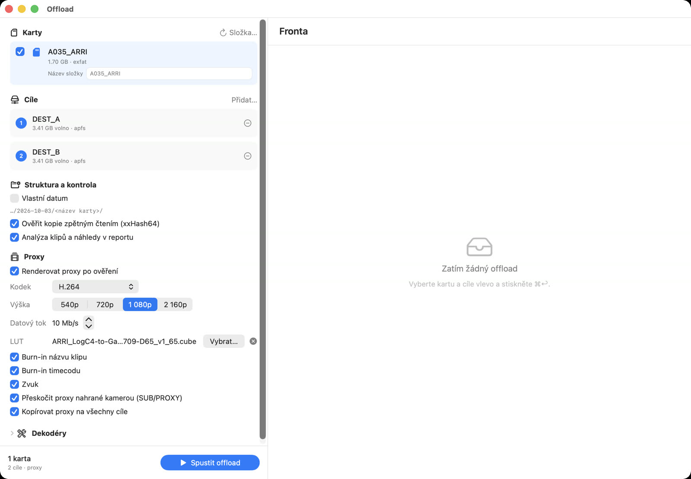
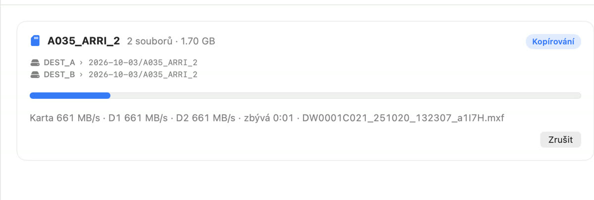
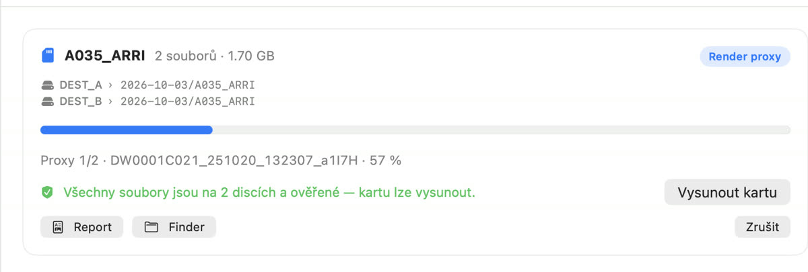
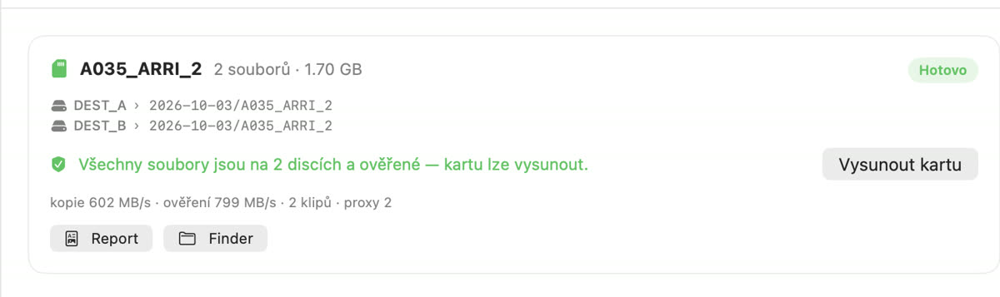
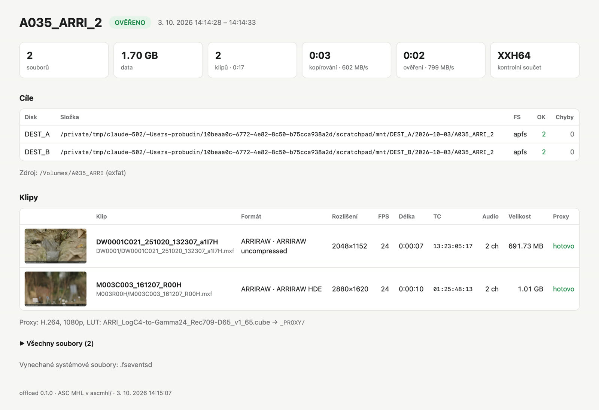
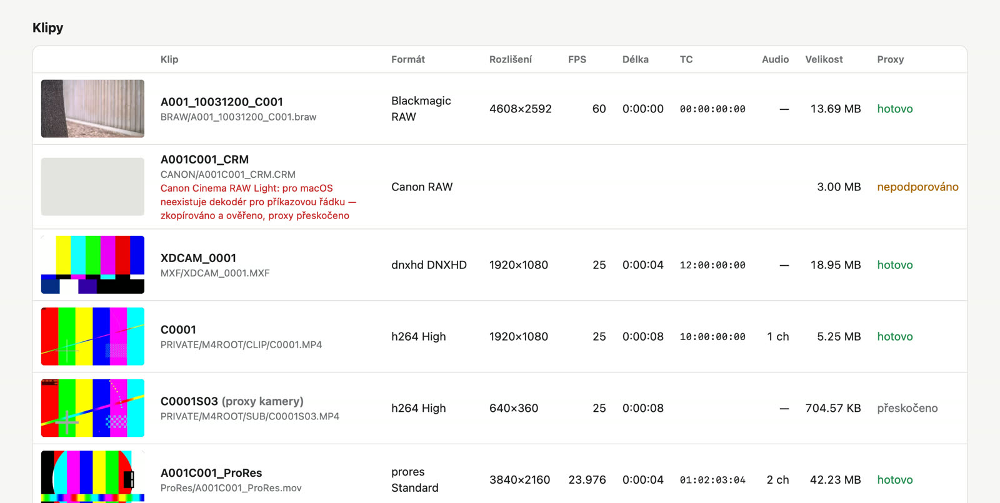
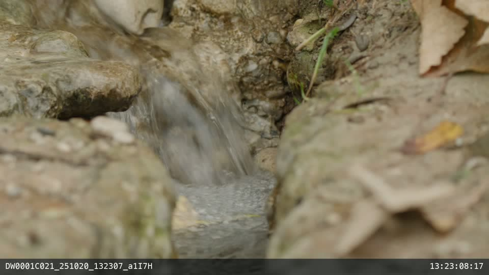
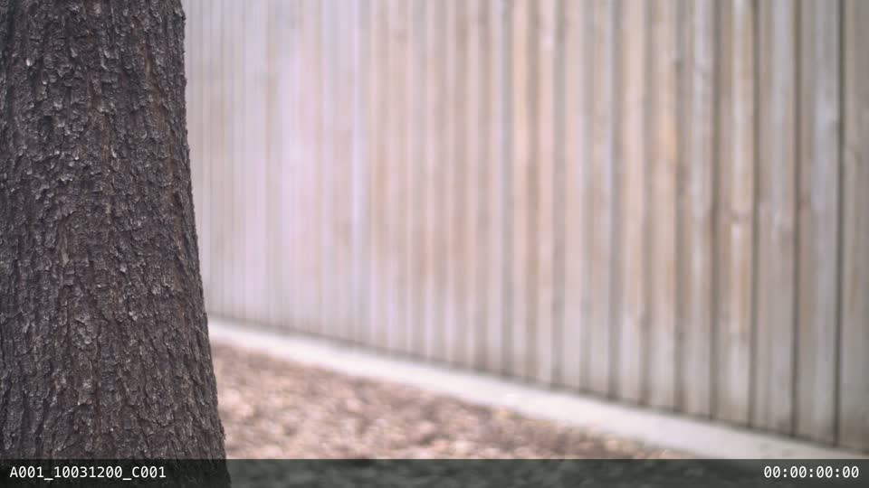

Aplikace zkopíruje paměťovou kartu z kamery najednou na dva (nebo více) disků, každou kopii ověří kontrolním součtem, vytvoří report a volitelně vyrenderuje náhledová proxy videa s LUT. Hlavní důraz je na rychlost a na to, aby bylo vždy jednoznačně vidět, kdy je karta bezpečně zálohovaná.
1KopieKarta se čte jen jednou, data jdou paralelně na všechny disky.
2OvěřeníKaždý soubor se přečte zpět z každého disku a porovná se xxHash64.
3ReportHTML report s náhledy a metadaty klipů, záznam ASC MHL.
4ProxyVolitelně: H.264 / HEVC / ProRes s LUT a burn-inem.

Hlavní okno. Vlevo nastavení: vložená karta se objeví a označí automaticky, pod ní cílové disky, kontrola a proxy (kodek, rozlišení, LUT, burn-in). Vpravo fronta karet. Offload se spustí tlačítkem nebo ⌘↩︎.
Spolehlivost
Ověření z disku, ne z paměti. Zápis i zpětné čtení obcházejí systémovou cache, před ověřením se vyprázdní i cache samotných disků.
Na kartu se nikdy nezapisuje. Rozpracované soubory mají dočasný název, takže nedokončená kopie nikdy nevypadá jako hotová.
Kontroly před startem. Volné místo na všech discích, cíl na stejném disku jako karta, dva cíle na jednom disku.
Opakovaná karta nic nepřepíše – vznikne nová složka A001_2. Během offloadu Mac neusne.
Chyba je vidět. Selhaný soubor je v aplikaci i v reportu červeně, karta se v tom případě neoznačí jako bezpečná.
Průběh offloadu
Od karty k ověřeným kopiím

Kopírování. Rychlost čtení karty a zápisu na každý disk (D1, D2), zbývající čas a aktuální soubor. Celková rychlost je dána nejpomalejším článkem, druhá kopie nic nezpomalí.

Karta ověřena, proxy se renderují. Jakmile jsou všechny soubory na obou discích a ověřené, objeví se zelené potvrzení a tlačítko Vysunout kartu. Kartu lze vrátit kameře, i když proxy ještě běží – čtou se už z disku. Mezitím lze kopírovat další kartu.

Hotovo. Souhrn rychlostí, počet klipů a proxy, odkazy na report a složku ve Finderu.
Kdy je karta bezpečná: až když aplikace ukáže zelené „Všechny soubory jsou na N discích a ověřené“. Ne dřív – ani když kopírování doběhlo.
Výstup
Report
Do každé karty na každém disku se uloží složka _REPORT s HTML reportem (otevře se v prohlížeči, náhledy jsou uvnitř souboru), JSON, textovým souhrnem a seznamem hashů. Složka ascmhl obsahuje záznam ve standardu ASC MHL, se kterým pracují DIT nástroje jako Silverstack nebo ShotPut.

Report karty z ARRI ALEXA. Stav, počty, rychlost kopie a ověření, cílové disky a klipy s náhledem (s LUT), rozlišením, fps, délkou, timecodem, zvukem a stavem proxy.

Karta s různými formáty. Blackmagic RAW, Canon RAW (zkopírováno a ověřeno, proxy nepodporováno), DNxHD v MXF, Sony XAVC s vlastním proxy kamery (přeskočeno) a ProRes 4K.
Proxy se renderují až po ověření a z disku. Pořadí: zmenšení → LUT (.cube) → burn-in názvu klipu a timecodu. Do souboru se zapíše i timecode stopa, takže proxy jdou ve střižně napojit na originály.

ARRI ALEXA 35, ARRIRAW · LUT ARRI LogC4 → Rec.709

Blackmagic URSA Mini Pro 4.6K, BRAW · LUT Blackmagic Film → Video
* Podpora R3D je napsaná podle dokumentace REDline, zatím neověřená na skutečném klipu. Kopie a ověření fungují pro jakýkoli soubor na kartě bez ohledu na formát.
Offload 0.1 · macOS 13 a novější · aplikace + příkazová řádka offload